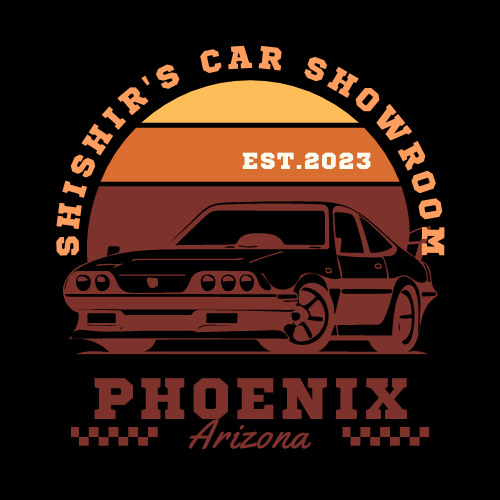
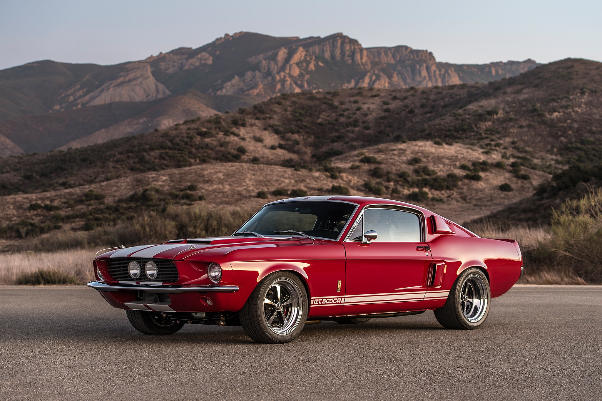

|  | Shishir's Car Showroom |
|---|
|  |
Ford Mustang Model Year: 1967 Miles Driven: 36k Previous Owners: Indiana Jones Price: $207,348 |
|---|
Like the car it's built to mimic, Classic Recreations' GT500CR is a brawler through and through. Unlike many other resto-mod muscle cars, though, this one doesn't have a modern powertrain residing in the engine bay. Instead, power comes from a Ford Performance-sourced 427 cubic inch big block V-8.